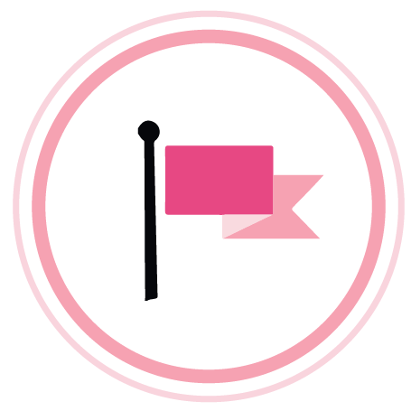

時代下的傳奇女王！玫琳凱艾施的漂亮人生 單親媽媽的逆襲之路
力從扶養三個年幼子女、經濟拮据的單親媽媽，到成為國際性的化妝品王國女王，成就無數榮耀，點亮世界，影響數以百萬計的女性發光發熱，勇敢追尋自己的生活並成就夢想！
「你能做到 」一句話的力量，勝過千言萬語
從7歲開始，小小的玫琳凱就擔負起照顧父親、整理家務的責任。當玫琳凱有點畏縮時，媽媽就會溫柔地告訴她：「別擔心，你能做到的。」這句話從此影響玫琳凱的一生，此後遇到任何猶豫不決的情況時，「妳能做到」這句話總會浮現在她腦海。 不只是你能做到，懂得自己的極限、柔軟、有彈性、懂得變通，「人一定要懂得如何面對失敗，那是遲早會遇上的。我很喜歡一句話『每失敗一次，就離成功更近了些。」玫琳凱說。
玫琳凱起源
在直銷業努力了25年之後，玫琳凱毅然地決定退休，
她想要建立一個「美夢公司」，成為支持婦女的力量．提供機會，讓女性對自己、對生活都能有更深切的想像和盼望，增加快樂與正面的指數。
在1963年決定以5000美元存款創立MARYKAY，製造保養樣品，並招募9位美容顧問，開始銷售產品、推廣業務。在玫琳凱公司成立的第一年，玫琳凱美容顧問人數就由9名暴風成長至300名，年業績將近20萬美元！

到了1980年代，玫琳凱兼職的美容顧問年收入就有約四千美元，有四千位業務督導的平均年薪達六萬美元，玫琳凱非常自豪地說，在她的公司裡，女性年收入五萬美元的人數高居全美第一！
1969年建立粉紅轎車獎勵計劃，成為象徵美容顧問奔馳的獎盃，這就是玫琳凱的粉紅色力量，柔和但又堅強。透過顏色不只能美化我們的外在，更能帶來能量，改變生活，增加快樂與正面的成功指數。